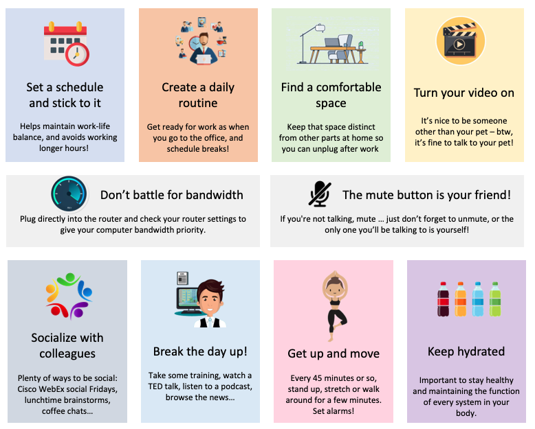

在家工作没有想象得那么美
Posted on 四 28 4月 2022 in Journal
在家工作的优点
- 节省了通勤的时间
- 可以更加灵活地安排协调工作事项与个人事务
- 减少交通成本，以及水电，办公耗材等成本
- 按自己的身心状况灵活安排工作会更高效
- 减少了来自同事的干扰
- 更加减碳，更加环保
- 可以放自己爱听音乐，用自己的机械键盘而不必担心吵到别人
在家工作的缺点
- 缺少与同事的社交，会变得更孤僻
- 两点一线做成了一点，很难激发自己的热情
- 只有强大的自律才能高效的工作
- 沟通和交流更加困难，什么工具也比不上面对面的聊天
- 模糊了工作与生活的界限，似乎眼一睁就可以上班，眼一闭就能下班，一天的时间很长，要么干得太多，要么干得太少
- 更多来自家庭，小孩和家务的干扰
- 缺少可见性，从而减少了职场上的机会
怎么办
- 打造自己的理想的工作环境，起码要有一个专门的角落能专注和舒适地工作
- 安排规律的起剧场安排，做好生活和工作的平衡，假装自己在办公室那样
- 有节奏地适时工作和休息，象蕃茄工作法提倡的那样
- 充分利用网络会议，聊天工具与同事保持充分的沟通和交流
我的同事 Helen Gall 写过一篇文章 “10 Tips for Working at Home Like a Pro ”, 很有借鉴意义
1) 制定一个时间表并坚持下去。
这将帮助您保持工作与生活的平衡；否则，您可能会发现自己的工作时间突然比平时更长。
2) 建立一个日常作息习惯。
像去办公室一样准备工作，穿上普通的衣服。相信我，你以后会喜欢运动裤的！在前往笔记本电脑和安排休息时间的路上，顺便去厨房喝杯咖啡。
3) 找个舒服的地方工作。
如果您没有办公桌，这一点尤其重要。不要成为 Ergo Zombie - 选择一个您能够高效工作的地方，并保持该空间与您家的其他部分不同。这样，您可以在完成后从工作中拔出。
4) 打开你的视频。
我们中的许多人独自在家工作，所以很高兴见到宠物以外的人。顺便说一句，和你的宠物说话完全没问题。和你的狗说话意味着你很聪明。 （不疯狂！）
5) 与同事交往。
还有很多其他方式可以保持社交，其他团队的想法包括 Cisco Webex 社交星期五、午餐时间头脑风暴和团队咖啡聊天室。
6) 休息一天
参加一些培训、观看 TED 演讲、收听播客，或者浏览我们的新闻档案或每日专题。
7) 起来走动。
每 45 分钟左右，站起来几分钟，伸展一下，或者只是四处走走。设置闹钟。我愿意;否则，有时会流逝数小时。坐病是真的！
8) 保持水分。
这在保持健康和维持身体每个系统的功能方面发挥着重要作用，包括心脏、大脑和肌肉。
9) 不要为带宽而战。
如果您没有思科虚拟办公室，提高速度和可靠性的一种方法是直接插入路由器。 Wi-Fi 可能给你自由，但以太网给你稳定性。检查您的路由器设置。您可以让您的工作计算机带宽优先于您孩子的 iPad 或您甚至不知道您可以做到这一点的非技术室友。
10) 我最后的提示：
记住静音按钮是你的朋友！ 🙂也许您正在开会并想吃午餐，或者您的孩子在家玩得太开心了。如果您不说话，请静音……只是不要忘记取消静音，否则您唯一能与之交谈的人就是您自己！

参考资料
- https://www.personio.com/hr-lexicon/homeoffice/
- https://weare.cisco.com/c/r/weare/amazing-stories/10-tips-for-working-at-home-lie-a-pro.html